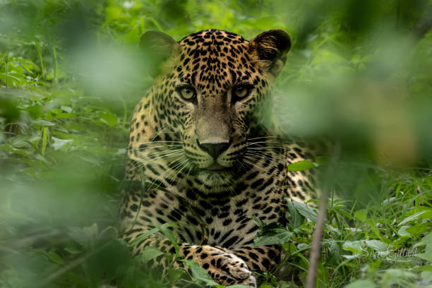
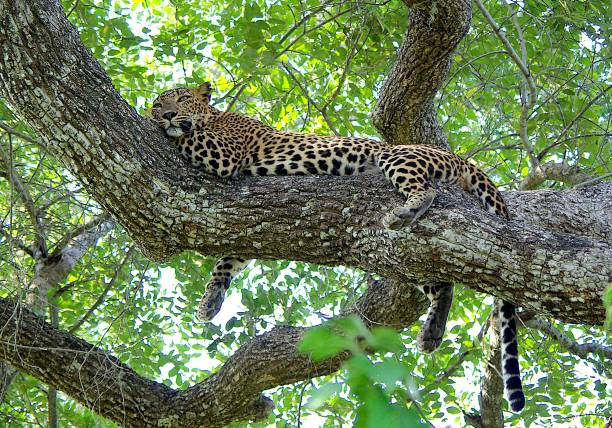

World's Highest Leopard Density

Yala National Park is famous for its leopard sightings; the park holds one of the densest populations of leopards globally. Morning and late-afternoon safaris maximize visibility.
Tips for Spotting
Use a local guide, keep distance, and bring a telephoto lens. Respect park rules to protect wildlife.

